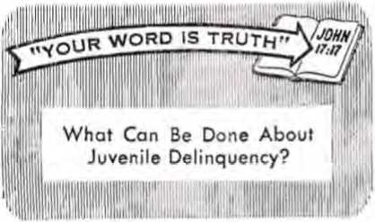

3
The Problem of Conscience
Church Programs Get Updated
PAGE 8
Wild Foods for Your Table
PAGE 12
Military Junta Rules Greece
PAGE 20
THE REASON FOR THIS MAGAZINE
News sources that are able to keep you awake to the vital issues of our times must be unfettered by censorship and selfish interests. "Awake!" has no fetters. It recognizes facts, faces facts, is free to publish facts. It is not bound by political ties; it is unhampered by traditional creeds. This magazine keeps itself free, that it may speak freely to you. Bui it does not abuse its freedom. It maintains integrity to truth.
The viewpoint of "Awake!" is not narrow, but is international. "Awake!" has its own correspondents in scores of nations. Its articles are read in many lands, in many languages, by millions of persons.
In every issue "Awake!" presents vital topics on which you should be informed. It features penetrating articles on social conditions and offers sound counsel for meeting the problems of everyday life. Current news from every continent passes in quick review. Attention is focused on activities in the fields of government and commerce about which you should know. Straightforward discussions of religious issues alerf you to matters of vital concern. Customs and people in many lands, the marvels of creation, practical sciences and points of human interest are all embraced in its coverage. "Awake!" provides wholesome, instructive reading for every member of the family.
"Awake!" pledges itself to righteous principles, to exposing hidden foes and subtle dangers, to championing freedom for all, to comforting mourners and strengthening those disheartened by the failures of a delinquent world, reflecting sure hope for the establishment of God’s righteous new order in this generation.
Get acquainted with "Awake!" Keep awake by reading “Awake!"
Pvblibhzd Semimonthly uv watchtower bible and tract society of new york. inc 117 Adams Street Brooklyn, N.Y. 11201. U.S.A.
N. H. Knobs, President Grant Suiter. Secret ary
Average printing each issue: 4,550,000 Five cents a MW
Yearly subseripttan ruies
Offices (or t-mlnianilily editions
America, U.S., 117 ii- Brc-rdyn, N.Y. 11201 >1
Australia, 1! Beresford Rd., tjr. • :>, N.S.W.
Canada, 150 Bridgelantl Ato., a • I1’ Ont |1 Enijlaad, Watch Tower House,
The Ridgeway, London N.W. 7
Kew Zealand, 621 New North Bd.. Auc' ..mil S.Vt, R
South Africa, Private Bag 2, P.O, Lland tonteln, Tri,
(Monthly editions cost half Iha atuws ratetJ
Britt lows tor subscriptions sLuiihl I? .-at to the office in "liut country, Otherwise send 1'uur t'-iiLlr.'.ariee I a Break! jii. Notice of expiration id • /at u1 . no Ljirs befttw "iihairiptiaii expires.
Now published in 26 languages Semimonthly—AfrlkwiH, Cftbussn, Danish, Dutch, English, Finnish, French, German, Greek, Iluko, Italian, Japanese, Korean, Norwegian, PoriugHesp. SpanEii, Swedish. Tsgptoij. Zulu.
Monthly—Chin, r, Clnyanla, Hlligayuou, Malhriiriam, PolLili.
Tamil, VLtul i.ui.
CHANGES Or ADDRESS should read) tn thirty days Imteri your moving date. Give us your old and new addre» (It possible, your old address label). Write Watchtower. 117 Adams Street, Brooklyn, New York 11201, U.S.A.
." iiAT.jgf paij Brooklyn. N.l Printed .lii LkS.A.
The Bible translation regularly ufed in “Awike!” is the New World Translation of the Holy Seriplures. 19fil edition When other tran.'latioris are #>td. this k clearly marked.
CONTENTS
The Problem of Conscience When Opposition Is Resisted Church Programs Get Updated Wild Foods for Your Table Working Elephants Meet Us in Bombay
The Body's Circulatory System Military Junta Rules Greece
3
6
S
12
15
16
19
20
Prison Walls No Barrier to Bible Truths 2-“Your Word Is Truth"
What Can Be Done About Juvenile Delinquency?
THE PROBLEM OF
HOW close the problem of conscience comes home to every one of us today! More than ever before difficult decisions must be made because of the changing moral standards, the pressures of business and the demands of governments.
The problem of conscience does not exist for the lower animals. A lion feels no guilt for killing and devouring the graceful and harmless impala, nor the crocodile for gobbling up a beautiful fish or waterfowl, nor the mosquito for depriving you of some of your blood, at the same time tormenting you. You can teach a dog or a cat not to take certain things, but you cannot teach them not to steal. The Decalogue or Ten Commandments of Moses have no meaning for them. This is another testimonial to the great gulf that exists between man and beast.
Our conscience is our moral judgment applied to our own conduct. We should all strive to have a good, clean conscience. To have a bad conscience means to have one that reproves us, one that weighs us down with the burden of guilt.
The Word of God, the Bible, by its counsel and examples strengthens our conscience. It tells us to “hold a good conscience." In particular does the apostle Paul stress the conscience. He mentions it some twenty times in his writings and repeatedly expresses his own concern for a good conscience: “Brothers, I have behaved before God with a perfectly clear conscience down to this day.” (1 Pet. 3: 16; Acts 23:1) Could you make that same statement about yourself?
Everyone ought to have a strong, clear conscience. But that is not all. We also need to have an enlightened, a well-instructed conscience. Generally overlooked is the fact that our conscience was not given to us to instruct us as to what is right and what is wrong. While the conscience does relate to norms, principles, standards and rules of conduct, in itself it does not instruct; that is not its purpose. What is its purpose? To prompt us to choose to act in accord with what we have learned to be right and to avoid that which is wrong.
But with what are you going to instruct your conscience? Your choice will directly influence how your conscience functions, whether it serves you well or leads you astray. For instruction in what is right and what is wrong the Creator has given us his Word, the Holy Bible. In it we find summed up our duties in the two great commandments: “You must love Jehovah your God with your whole heart and with your whole soul and with your whole mind and with your whole strength,” and, “You must love your neighbor as yourself.” —Mark 12:29-31; 2 Tim. 3:16, 17.
One cannot logically escape the obligation of this first commandment, at least not in his own mind, unless he becomes an agnostic or an atheist; which may well be why some persons accept these alternatives to faith, so as to feel free from accountability to God. Nor can we escape the logical imperative of the second commandment, for it obligates us to do to others as we would have them do to us. (Ps. 14: 1; Luke 6:31) Yet how many people are there whose decisions in life show that they are deeply influenced by a conscience that has been instructed in these basic principles of life?
Why Such a Problem
The matter of conscience presents serious problems by reason of the fact that certain influences exert pressures on persons to act contrary to their understanding of what is right and what is wrong. Among these have been and are the pressures of nationalism. Testifying to this is the London-based “Amnesty International.” Its aim is to pressure governments to set free “prisoners of conscience.” In the past four- years it has seen some 800 such prisoners released, although it does not claim that this was the result solely of its efforts. At present it has a file of 1,200 such cases it is trying to help by appeals to governments and publicity.
This problem of conscience has also been brought to the fore by a series of articles entitled “The Order of the Skull,” which recently appeared in the German news weekly Der Spiegel (The Mirror). One of these articles told of the Nazi plan systematically to liquidate the cultured classes of Poland as the German armies moved forward. This wholesale murder disturbed some of the elite of the armed forces but not the elite of the SS to whom Hitler had committed the task. These latter doubtless salved their consciences by claiming that they were duty bound to obey the orders of Der Fuhrer regardless of what these might be. However, in the trials of the Nazi war criminals by the Western powers, these defendants were repeatedly reminded that they had a conscience of their own to which they were accountable. But to what extent have men learned the lesson of the Nuremberg trials?
Are the courts today, under all circumstances, willing to urge men to respond to their consciences? When a certain youth was tried during the past year in the court of a Western power for having refused to enter military service because of scruples of conscience, his attorney highlighted this matter. He illustrated the point by means of a parable: Two men were being tried before a judge. The first, a Nazi, was found guilty of war crimes and was sentenced because he had implicitly obeyed the commands of his governmental superiors instead of following the dictates of his own conscience. The man who immediately followed him was a Christian minister who, for reasons of a conscience trained in Bible principles, had refused to enter military service. For following his conscience instead of obeying the commands of governmental superiors he was sentenced to prison.
“Your honor," the defending lawyer continued, “on the one hand we pronounce a man guilty because he did not follow his conscience and on the other hand we pronounce a man guilty because he does follow his conscience!
Does this make sense?" How would you have judged the case? The judge saw the point, and so gave the young Christian minister what apparently was the lowest sentence he could legally give, namely, one month in prison.
Conscience and the Vietnam War
In particular has the issue of the war in Vietnam caused the problem of conscience to involve more and more persons, and this has been both on religious and nonreligious grounds. Some 2,000 young United States Adventists, whose religion is opposed to war, have chosen to serve in the Medical Corps. As one of their spokesmen put it; "We don’t like war .. . but we tell our boys that when Uncle Sam calls you, you go.” And according to the New York Times, June 26, 1966, the number of Roman Catholic objectors to war has exploded in recent months. They too face problems because of conscience. More and more young Catholic men are seeking the advice of the Catholic Peace Fellowship on “the Church’s teaching on the primacy of conscience."
Then there are those whom some call “peaceniks,” young men who refuse to have anything at all to do with war solely on humanitarian grounds. One young man who was imprisoned because of having taken this stand was quoted as saying, among other things: "What was Eichmann’s crime, essentially? It was essentially that he obeyed the law even when it contradicted a higher morality. This is the essence of the Nuremberg decision, that when conscience and the state conflict, conscience must be obeyed."
ARTICLES IN I UE NEXT ISSUE
• In What Kind of Order Would You Like to Live?
• Assembly Time in Malawi.
• Will the List of Extinct Wildlife Keep Growing?
• How Does Water Work for You?
On the other hand, there are also some young men in the United States who are not opposed to war in itself, but to a particular war, the war in Vietnam. For various reasons they hold that the position of the United States in Vietnam is morally precarious, though many, of course, disagree with them.
Speaking in the defense of such young men who have gone to jail for reasons of conscience. The Christian Century, June 22, 1966, editorialized: "German war criminals were not allowed the defense that they were merely carrying out the orders of their superior in patriotic obedience. Yet the government of the United States insists in its Selective Service Act that citizens commit what they believe to be ‘crimes against humanity’ or go to jail.’’ It is indeed evident that the matter of conscience poses problems, both to governments and to individuals.
Dedicated Christian Ministers
In various parts of the world the dedicated Christian ministers of Jehovah also have been sent to jail because of following their conscience in the matter of military service, both in peacetime and in wartime. These have received and are receiving a wide range of treatment. Hitler's Germany, particularly during World War II, had many of them executed. Within the last year or so in Cuba some 300 of them have been arrested and sent to military camps, some being seized so suddenly that they were not even able to say good-bye to then' families. They have had to face beatings, being prodded by bayonets, being buried with only their heads above the ground, their faces scorched and beaten by the sun all day. Others have been told to dig their own graves and warned that they would be shot and buried in them if they did not become soldiers. Why? Because in the matter of military service their conscience would not allow them to do what the State demanded.
In Greece two of these Christian ministers were sentenced to death on account of conscience, but popular clamor throughout the world apparently caused the authorities to reconsider and they commuted the death sentences to seven years and four and a half years, respectively. Somewhat lesser sentences are being imposed on such Christian ministers in France, Germany and the United States. By way of contrast, Sweden has ruled that it would not imprison these sincere Christian ministers for being obedient to their consciences and so now excuses all such who base their objection to military service on the Bible.
Conscience and Everyday Life
Not that it is military service or the war in Vietnam that alone forces the problem of conscience upon men. Questions of conscience face us on every hand. Will a salesman lie to clinch a sale? Will an employee claim he is sick when he was watching a ball game during working hours? Will a student “crib” to pass his examinations? Will a husband or wife cheat by carrying on a flirtation or a more serious “affair” with another of the opposite sex?
Obeying the voice of conscience is not always easy. Not by any means is it the following of the lines of least resistance. How could it be and have any merit? But a knowledge of God's Word can help one to face the problem of conscience with success. By an enlightened study of it one’s conscience is educated and strengthened for doing that which is right and wise. Such study fortifies one to combat the weaknesses of the flesh and the unrighteous pressures of the world. Helpful also is right association, choosing as companions those who are concerned with doing what is right.
This problem of conscience is one that you must face. Will you see to it that your conscience is properly trained? Will you take steps to keep it strong? When it prods you, will you respond in the right way? Have you determined to do what is right even when it results in hardship at the hands of others? A properly trained conscience is a protection, and it can guard you against much grief. But under present conditions it also may lead to problems. Upon examining the facts, what do you think? Should a person heed his conscience at all times and regardless of what others may say or do? Your answer will deeply influence your life.
WHEN OPPOSITION IS RESISTED
SHE Master, Jesus Christ, foretold that Christians would have opposition from family members. (Matt. 10:34-36) While this can be a severe trial, the following experience shows what can happen when integrity to God is maintained and opposition is resisted:
“Almost from the beginning my husband opposed my attending the congregation Bible studies, saying that he wanted me home early at night. I explained the importance of the meetings to him, the length ol them, and the time involved in my traveling to and from the Kingdom Hall, but he pushed this explanation aside and gave me strict orders to get home earlier or ‘else.’
"I tried many times to reason with him, and even invited him to the meetings to see for himself the Importance of the things discussed there, but to no avail, for he became more demanding. It was at this point that I knew I had to make a decision as to whether I would continue to obey the Bible's command to assemble, or my husband's demand not to. I decided in favor of attending meetings. Following this decision there came bitter opposition from my husband, Including threats almost every time I returned home from a meeting. His verbal threats during one ‘lecture’ turned into physical blows, but even that did not change my mind.
“He apparently sensed this and decided to change his tactics. His first move was to accept the invitation to accompany me, not for the purpose of learning something, but to ‘investigate.’"
When asked recently about his “findings," he said:
“I found out that the meetings were very enjoyable. So much so, in fact, that I never stopped attending. The more that I attended, the more I understood why my wife would not give them up. After attending for a while I was invited into the field ministry and I accepted the invitation. I have been sharing in it ever since.
"A few months after 1 began preaching, my sister came to live with us. She arrived during the time of our circuit assembly. Since she did not know anyone in our town, she attended the assembly with us. When I asked her what she thought about the things she had seen and heard, she scoffed and ridiculed.
“Although she opposed me and my beliefs, in time, she did allow me to start a Bible study with her. However, she would scoff at the things we were studying, saying: ‘Aw, that can’t be so.’ This was rather disheartening to me at times, but, nevertheless, I kept on trying to help her. My perseverance was not hi vain, for in a very short time she became more reasonable and anxious to learn."
His sister explains her change of attitude this way:
“It is true that I rejected my brother's explanation of the Bible, but this was because it was all so new and different to me. However, I started to attend the meetings every week, and through these and my Bible study I learned that the things my brother was trying to teach me were really true.
"About two months after I started attending meetings I was invited into the field ministry. I responded with an emphatic, 'No? Nevertheless, about one month later I changed my mind, and within two months I was conducting home Bible studies with other persons. Three months after I started in the ministry, my brother and I both got baptized at the same assembly. Six months later my younger sister came to live with us. She agreed to a personal Bible study.
“Although she seemed to take the study seriously, and began attending the meetings right away, yet, at the same time, she was still a regular church attender. For example, she would attend the public talk and Watchtower study with me each Sunday, but as soon as these meetings were over she would head for church. After about two months of this she suddenly stopped going to church. Why?"
This is her story: "I had always attended church regularly, and I saw no reason for stopping because I was learning some things from the Bible I didn’t know. However, it was only for about two months that I had this excuse, because one night during the minister's sermon he said that men on earth had 'seen God,' walked with him and talked with him. That did it, for right away I remembered learning earlier in my Bible study that ‘no man has seen God at any time? (John 1:18) I could hardly wait to get home and ask my sister to show me that text in the Bible again. The reading of that scripture again ended my churchgoing career." What a marvelous outcome! And all because a Christian wife faithfully withstood the threats, ridicule and opposition of her husband.
CHURCH PROGRAMS GET
GGZ^RAZY, man, crazy—and amen,” is
Vj the way an observer described a religious program at the Trinity Cathedral in Cleveland, Ohio. The service was off and swinging when a jazz band ripped into “Muskrat Ramble.” The congregation of 1,200 applauded for “Canal Street Blues” and "When the Saints Come Marching In.” Robert Guertin, who had introduced a professional jazz group, the Dukes of Dixieland, called the program “a Gig with a capital G." Bishop Nelson M. Burroughs of the Ohio Episcopal diocese described the service as "an hour of creative worship.”
A few years ago this program would have shocked the pious parishioners right out of their comfortable pews, and the ministers responsible for it would have been banished from the congregation. But as things now stand, not only was the program hailed by the parishioners, but the ones responsible for it were praised as vigorous, forward-looking men, men of vision. How times have changed!
Traditionally, the heart of Protestant worship was the sermon. In Catholic worship it was the mass in Latin. People went to church to hear a sermon preached or merely to relax in the realm of aweinspiring music and religious wonder. Some enjoyed the soul-searching tones of
the organ, while others poured their hearts out in song. When it was all over the parishioners filed out of the church
in their Sunday finery past their pastor. They shook his hand and usually told him what a fine sermon he gave. That routine seemed to satisfy; if not satisfy, at least pacify. But no longer.
Increasingly, Catholic and Protestant churches have been reaching the conclusion that their way of worship requires updating. The reason for this conclusion has been the empty pews on Sunday morning. Twenty years ago, Gallup Poll interviewers found that 67 percent of the population in America attended church sometime during the week. Today the number of adults answering church bells has dropped below 45 percent. This downward trend in church attendance, despite boasts of growing membership rolls, has created concern among the clergy. Dr. Charles L. Taylor, executive director of the American Association of Theological Schools, said: Unless the eternal gospel is declared in terms that "a new age can understand, soon nobody will listen and the seminaries themselves will be as extinct as the dodo bird.”
So modernization has gone to church. Architecturally speaking, the new religious structures are streamlined in and out to resemble the space-age era. Worship also has had a face-lifting. The Roman Catholic mass, once conducted strictly in Latin, is now heard in the vernacular. The Vatican Council decreed that the priest now may face the congregation instead of having his back to it. In the United States meatless Fridays have been abolished. Even the Catholic view of Protestantism has mellowed somewhat. No longer are Protestants to be viewed as heretics, but as “separated brothers.” In Protestantism there has been a liberalizing of doctrine and worship too. Still none of this has forestalled the statistical attendance trend in its downward plunge. Especially conspicuously missing are the youth.
Communications Problem
Ministers have diagnosed the cause to be one of communication. “The old ways of communicating just don’t communicate anymore,” said Canon C. Parke Street of Louisville’s (Kentucky) Christ Church Cathedral. So changes are being made. An Auckland, New Zealand, Methodist minister felt that religious services needed some life. He was convinced that an injection of popular music would be just the thing to enliven "traditionally dull and stereotyped” church services. Minister Basil Hilder, of Northcote, said: "I have felt for a long time that our services are, for the most part, pretty unimaginative and unattractive.” "A more modern approach will help to get rid of the ‘old fuddy-duddy’ image and show that churchgoing can be a joyful, rather than mournful approach to life.” Hilder went on to say; “I feel Dean Chandler can be right when he said people were staying away from church because of sheer boredom." Today old ways bore. New ways are being sought.
“We’re in a new age of radical change,” said Dr. Truman Douglass, executive vicepresident of the United Church of Christ Board of Homeland Ministries. “But too many Protestant churches don’t seem to have noticed." One change is that younger ministers are growing increasingly impatient with older ministers and their traditional ways. These young men are impatient with the church’s apparent inability really to communicate with modern society. And for these reasons, many are beginning to think it is the church that is dead, not God.
A growing number of young ministers want to be where the action is. They maintain that wearing the collar backward does not take away a clergyman's civil liberties. They believe that he has a right as an individual citizen to speak his mind on secular issues, such as disarmament, federal aid to education, birth control, the United Nations, and so forth.
The "New View”
Modern churchmen have endeavored to change the church's image by moving the pulpit into the heart of show business. Startling new techniques have been introduced straight from Broadway and Madison Avenue. Churchgoers were jarred to attention by jazz liturgies, plays, modern dance and folk-rock masses played by long-haired guitarists. They saw puppets and mock warplanes all somehow woven into religious themes. Some churches offered prizes to members who brought in the most new members. Still others advertised fashion shows, hat parties and an opportunity to get their picture taken with an elephant. Others provided baby-sitters for parents with children who desired to go to the football games after church. Even characters from the comic strip “Peanuts" were pressed into service.
But these are only a few of many innovations cropping up in Protestant and Catholic services. “If the church is going to be vital, its music has to be part of what’s happening in music now,” said religious composer Edgar Summerlin. "The church ought to use jazz and other modern musical forms.” So in came jazz and rock *n’ roll.
In Britain, as in other places of the world, the substitution of jazz for “sacred” music was the first breakthrough. In Chicago, Illinois, jazz musicians performed in the Episcopal Cathedral of St. James. Nightclub entertainers gave a concert to support the work of the night pastor of Rush Street. A Methodist minister in New Zealand injected popular music into his church services. Church attendance overflowed for the first time in thirty years. At St. Stephen's Episcopal Church in Houston, Texas, guitarist Rick Kelley accompanied the choir in a spirited folk song mass. At a service for youth groups at Boston’s Old South Church, teen-agers frugged in aisles as a combo accompanied a litany that went, “Praise His Name with Rock ’n’ Roll.” In San Francisco a trumpeter, drummer and pianist played background music as a priest prayed at the altar during a “Jazz. Mass” of the Trinity Episcopal Church.
Even prayers are updated. Some of their titles reveal the nature of their message. "They Are Called an Interracial Couple, Lord”; "This Is a Homosexual Bar, Jesus.” Malcolm Boyd, minister of the Episcopal Church of the Atonement, said these prayers seem very real to him. A book of prayers, written for the "hip” generation, entitled “Are You Running with Me, Jesus?” deals with problems ranging from premarital sex to alcoholism and war. One prayer goes something like this: “It’s morning, Jesus. I’ve got to move fast . . . get into the bathroom, wash up, grab a bite to eat, and run some more .. . Are you running with me, Jesus?" Charlie Byrd, guitarist, and preacher Boyd were billed as the main attraction of a musical evening at the Washington Cathedral.
In South America, where there is much religious apathy, churches are trying many innovations to get the people back in their buildings. Three thousand youths were reported to have attended mass, which was accompanied with ye-y^-ye (rock ’n’ roll) music, in Our Lady of Peace Catholic Church in Rio de Janeiro. A long-haired musical group caused bedlam among the youths present. One mini-skirted miss climbed up on top of the altar. A similar mass was conducted in Curitiba. One of the featured musical numbers was “I Want Everything to Go to Hell.”
These new ways of confronting people with what Christendom’s religion is all about are understandably at first quite shocking to parishioners. But when the shock wears off, many of them find they like the stimulation of them. While the movement toward change is essentially Protestant, some synagogues and Catholic churches are experimenting as well.
The Dance in Worship
Dancing is also one of the innovations now altering Sunday worship. If music, singing, painting, sculpture and architecture make sense in church, so does the dance, so reasons the new generation. Therefore, at regular Friday-night services at Temple Isaiah, a Reform congregation in Lexington, Massachusetts, a traveling troupe performs a dance cantata commissioned by the synagogue. The St. Mark’s Chancel Dancers of McLean, Virginia, are sponsored by St. Mark’s Church. A dance and drama festival are the highlight of its program. Canadian dancers performed a ritual ballet in Christ Church Cathedral, Montreal, Canada. Dean William Bothwell of the cathedral defended dancing in church by saying: “Dance demands discipline, so does worship. Let us use all the arts to glorify God."
At the First United Church of Christ in Troy, Ohio, five high-school girls skilled in modern dance reportedly have replaced the traditional vocal choir. Called the "Rhythmic Choir," the group sets traditional hymns to a pantomime that strongly resembles modern choreography. And the Anglican Church of Canada in one of its services featured a “go-go girl.” The service was attempting—through its use of swirling colored lights, electronic music, poetry readings and a dancing go-go girl —to duplicate, without the use of LSD, the religious experience that some feel is produced by the drug. The “go-go girl” was to provide or portray a sense of joy during the service, which turned out to be one grand fiasco.
In a Roman Catholic chapel in Italy three mop-haired youth combos banged out a "Beat Mass.” A crowd of 500, including scores of priests, jammed into the chapel of St. Philip Neri. They stomped their feet and bobbed their heads to the rhythm of the electric guitars, drums and singers. Another 1,000 outside beat on the door trying to get in.
Enlivening the Service
Clergymen are finding new ways of enlivening the church service. The offering procedure, for example, is being pepped up. Forceful explanations are given by the minister of exactly for what the money will be used. Many churches are holding evening screenings of secular films, such as "Cat on a Hot Tin Roof” and “The Hustler.” Afterward, the congregation discusses the film and whether its characters did or did not apply Christian values to situations they faced. At one center, a group examines the philosophy of a "man's” magazine in an attempt to relate it to what they have learned through the church.
Ministers are reading inspirational poetry, showing film clips and even encouraging members to come to church in sweaters and slacks. In a service at the Birkenhead Methodist Church in New Zealand members came in miniskirts and beatle boots. In Brooklyn (New York) a Presbyterian minister stepped before his congregation wearing leotards one Sunday and danced “The Hermit Song” to convey religious feeling. Most of these innovations would not have been tolerated in the churches a few years ago. But O how times have changed!
Churchmen say they are trying to make the church more effective in today’s changing world. Attendance figures in many “theatrical” churches have tripled. But as for the effectiveness of the church, seminary professor Dr. Kenneth L. Chafin said: “There is a nominal relationship to the church, but people no longer look to the church for an interpretation of life.”
Then, why do they go to church at all? Why do they want innovations? The apostle Paul answers those questions: "There will be a period of time when they will not put up with the healthful teaching [of God’s Word the Bible], but, in accord with their own desires, they will accumulate teachers for themselves to have their ears tickled: and they will turn their ears away from the truth.” (2 Tim. 4:3, 4) People, for the most part, simply do not want Bible truth today. They want, instead, to be entertained, for they have become "lovers of pleasures rather than lovers of God, having a form of godly devotion but proving false to its power.” The admonition of the apostle is: “From these turn away.”—2 Tim. 3:4, 5.
SUPPLYING sufficient food to feed the hungry mouths in your family can be a real problem if you happen to live in an area suffering from an economic slump or in a country where the general population is undernourished. It has been estimated that half of the people in the world today are ill-fed. Even in prosperous countries there are many people suffering the hardship of unemployment and facing the grave problem of finding adequate food. It is so serious in the Appalachian region of the United States that the Federal Government has launched a one-billiondollar program in an effort to bring about some measure of relief to this impoverished region. Yet the food problems faced by such can be eased considerably, depending upon where they live, by their use of the free, wild foods growing around them.
In almost every country wild foods grow in abundance. They can be found in marshes, along streams, by lakes and ponds, in open fields, on hillsides, in woods, in vacant lots, and so forth. Usually they are free to whoever wants them. There is often no need for a family to suffer malnutrition when it lives within easy reach of wild foods. All that the family needs to do is to learn to recognize these foods.
Before ever venturing out to gather wild foods, however, it is vitally necessary to become thoroughly familiar with the edible plants. Getting the wrong plant can be dangerous, as there are many poisonous plants. Seven hundred out of the 300,000 species of plant life are definitely known to be poisonous. But the existence of poisonous plants should not frighten you from taking advantage of the wild foods that grow in abundance and that are free to whoever wants them. Books on wild plants are available in public libraries and they will help in identifying them.
Knowing how to cook wild plants is also necessary to make them tasty, and this too can be learned from some of the books that discuss the use of such plants for food. In some cases the water in which a plant is cooked needs to be changed a few times during the cooking process so as to remove substances that might tend to make it too bitter or pungent. There are, however, many wild plants that are delicious without this leaching process. Some make very tasty and nourishing salads that are rich in needed vitamins and minerals.
As with any kind of food that is different from what you customarily eat, it may take awhile to get used to the unfamiliar tastes of wild foods. A family in need, of course, has a real incentive to get used to them since these plants are free and nourishing. Even those families not in need will find the different tastes an interesting change. There is also the benefit they receive from the high vitamin content in them.
Some Edible Wild Greens
An edible wild plant that is common all over the world is known as chickweed; it has the Latin name Stelfaria media. This tender, low-growing plant could aid poorly nourished people that live in the vicinity where it grows to have good health if they would learn to recognize it as a food instead of looking on it as an undesirable weed.
Because chickwced is almost tasteless and very mild it is best when mixed with stronger-flavored cooked greens. Due to its tenderness it requires very little cooking. It also is good when eaten raw and can be added to almost any tossed salad.
As surprising as it may seem, the common stinging nettle (Urtica diocia) is one of the most nutritious of all plants. It has a high protein content and is rich in vitamins A and C. Probably you are wondering how a plant with stiff, stinging hairs all over it can be eaten, when these hairs can cause painful smarting and a red rash on bare flesh. The answer is that cooking renders the stinging hairs harmless.
Only the tender tops of the young, first-growth slinging nettle, when it is about a foot high, are suitable as cooked greens. Older nettles are not palatable. After cooking them for about twenty minutes, they can be cut into small pieces and served. The juice is worth saving for use as a nourishing soup.
The edible weed amaranth (Aniaran-thus retroflexus) is a good food with a high iron content. It should be picked when it is very young. Since it has a mild flavor, it is best when mixed with wild greens having a strong flavor. In the fall the seeds can be gathered from the dried spikes of the plant and ground into a meal that can be mixed with wheat flour for making pancakes and muffins.
Purslane (Portulaca oleracea) is another common weed that is found throughout the world, and it too is good for food. The stem, leaves and flower buds can be used raw in a salad, either alone or with other salad plants, or it can be cooked. The seeds of purslane can be ground into a meal that makes delicious pancakes when mixed with an equal amount of wheat flour.
The common butterfly violet (Viola papilionaeea) that decorates the open fields in the spring with its pretty blooms is a very fine food, being an excellent source of vitamin A and exceedingly rich in vitamin C. One-half cup of violet leaves contains enough vitamin C to equal four average oranges. In fact, these leaves have more vitamin C than any domestic green vegetable. The blossoms are also rich in it. The leaves can be mixed with other raw greens for a salad or they can be cooked along with other greens. The taste of the leaves is a bit on the astringent side, but this can be lessened by mixing the cooked greens with other foods such as mushroom soup.
Another valuable wild food is curled dock (Rumex crispus). Although it is generally regarded as a troublesome weed, it is a food that is rich in vitamin C and vitamin A, and is therefore a healthful vegetable. It has the fine feature of continuing to grow when winter comes. In any warm period during the winter months it will send up fresh new leaves, giving a person vitamin-packed greens in wintertime. The leaves are best when young and while the nights are frosty. After the weather warms up they are very bitter to eat. By creaming the cooked leaves the slight astringency they have disappears.
These are only a few of the many wild plants that can be used as cooked greens or as salad greens. A few others are dandelion, plantain (Plantago), lamb’s-quarters (Chenopodium album), watercress (Nasturtium officinale) and wild lettuce (Lactuca canadense).
For those who live near the ocean there are several kinds of sea algae that can be used as food. One is known as Irish moss (Chondrus crispus), and another is called tangle (Laminaria digitata). There is also agar-agar (Gracilaria spinosa), Ceylon moss (Gracilaria lichenoides) and dulse (Rhodymenia palmata).
A fine food plant that grows in marshy areas Is the well-known cattail (Typha latifolia). During the months of May and June in the northern hemisphere the green spikes make a fine cooked vegetable. These should be gathered before the yellow pollen appears on the outside. After cooking them a few minutes in salted water, they can be served. The sheath must first be removed so the buds can be eaten from the tough stalk. In a few days a bloom spike will have yellow pollen that can be gathered and used as a nourishing addition to pancakes and muffins, A nutritious white flour can be made from the starchy roots, and bulblike sprouts on the leading ends of the roots are suitable when boiled.
Roots, Seeds and Nuts
The roots of the mallow, the Latin name for one species of which is Althea and Malva for another, can serve not only as a vegetable but also for obtaining a stiff, whipped froth like that from the white of an egg. The water from the boiled root will whip up after it becomes cold. So will the water from the boiled fruits. The inside of its flat-shaped fruit is good for food whether raw or cooked. The boiled root is best after it has been fried.
Throughout Europe, Africa, Asia and America there is a wild plant that grows small tubers underground that are nourishing and tasty. The plant is known as chufa or nutgrass (Cyperus esculentus). When roasted to a dark brown, the tubers can be pulverized to produce a fine flour, which can be mixed with other flours for baked goods. The pulverized tubers also make a good drink that can be brewed like coffee.
A common weed that is a good vegetable when gathered at the right time is known as great burdock or wild gobo (Arctium lappa). The core of the roots may be sliced and cooked in water with a little soda for thirty minutes and then cooked for another ten minutes, after the water has been drained off and replaced; it makes a fine food. The right time to gather the roots is in June and early July. After that they are too woody.
At any time of the year, however, the tubers of the day lily (Hcmerocallis fulva) can be used for food. Only the firm tubers should be used. The blooms and buds are also good when boiled only a few minutes. Even the closed and withered blossoms can be used.
Seeds from the wild mustard (Brassica) can be used to garnish salads or to make the mustard preparation commonly used on meats. But that is not all that can be used. The lower leaves on the stalk, when gathered early in the spring can be boiled and served as a vegetable. The bloom buds can also be eaten. In fact, the flowers can be boiled briefly and served like broccoli, but avoid the small upper leaves, as they are extremely bitter. This nourishing plant is rich in vitamins A, B,, B2 and C. Some other wild seeds that are useful as food are those from wild rice, sunflowers, wild carrots, curled dock and lamb's-quarters.
As far as nuts are concerned, there are many that grow wild. There are, for example, the black walnut, butternut, hazelnut, hickory nut, beechnut, acorn and pinon nut. The pinon nut comes from certain types of pine trees. Usually acoms have to be leached in water before they can be used.
Fruits
A much-neglected fruit that is exceedingly rich in vitamin C is produced by the common rose. It is the swelling at the end of the stems, called “rose hips.” In some instances a cup of rose hips may be equal, in vitamin C content, to a dozen oranges. The hips can be boiled to make a nourishing soup, and the rose petals, minus the white base, can be used as food in a number of ways if you can get roses that are free of poisonous sprays.
The many wild berries are excellent fruits that can provide a family with fine desserts. There are blackberries, elderberries, blueberries, cranberries, serviceberries (Amelanchier), strawberries, currants, mulberries, and so forth. Gathering such wild fruits is well worth the effort.
In desert regions there is the prickly pear cactus (Opuntia) that produces thorny knobs about the size of a lemon. This is edible fruit. In other places there are such fruits as wild apples, crab apples, wild grapes, papaw (Asimina triloba), wild cherries and persimmon. As with other plants, wild fruits will differ according to the country in which you live.
Teas
An excellent tea can be made from wild spearmint and peppermint. When freshly picked, mint is rich in vitamin C and is richer in vitamin A than carrots. Finely chopped mint can be added to almost any salad. Other usable mints are horsemint, water mint and Native mint. The Latin name for the mint species is Mentha and that for Native mint is Mentha arvensis. Catnip (Nepeta cataria) is another member of the mint family and also is rich in vitamins A and C. It, too, makes a fine tea.
There are many other wild plants that can be used for teas. Pine needles of the white pine, for example, can be used to make a tea that has a vitamin C content five times greater than lemons. The leaves of the small teaberry or wintergreen plant (Gaultheria procumbent) make a refreshing tea when boiling water is poured on the leaves and allowed to sit for a couple of days to allow a little fermentation to take place. Basswood flowers, clover blossoms, the leaves of blackberry, raspberry, strawberry and black birch can all be used to make healthful teas.
It is not possible to mention in one short article all the wild foods that are available to knowledgeable persons who are willing to make the effort to gather them. Since our generous Creator made a vast number of plants that are suitable for food, it is possible for a person to expand his diet considerably if he so desires. They can greatly help undernourished people who live where they grow and who are able to recognize them.
In the years to come, circumstances may arise in which you will find a knowledge of wild foods to be exceedingly useful. Such knowledge helped many families during the depression years in the 1930's. By learning to recognize just the few plants mentioned in this article a family could do much to meet its food needs now, as well as future needs when circumstances may be different. Once a family becomes acquainted with wild foods, it will seem very natural for them to be part of their daily diet and to have a place on the dinner table.
WORKING ELEPHANTS
It takes upward of six months to train an elephant to move logs in one of India's lumber camps.
We were thrilled to get your letter saying you hoped to visit us in India. How soon will you come? If you come during your northern winter, the weather will be nice here—not the hot summer temperatures of 110 to 120 degrees F. Do you want to visit one or two specific places? Or would you like to go on a tour with us for a month or so?
f Illi
If you were to come with us on one of our typical tours in India it would give you a good idea of travel here, and you would see some of the country. Of course, we do not travel by car here as you do. Distances are too great and the roads are not good. On the other hand, cost of rail travel is very reasonable. We will have to decide whether we will travel first class or third class. The wonderful thing about third class is that its cost is so low, about a half cent a mile—excuse me, you are English; that is, about half a penny a mile. It does have some disadvantages without a booking: You may have to try to climb in the window against a crowd who are trying to keep you out.
Yes, windows are a common means of ingress, with the traveler pushing his luggage ahead of him and then trying to match the right entrance with his own person. As the train comes to a halt the cars really begin to fill to overflowing; the ones already inside resist further encroachments. There then follows a lot of jostling—for the most part, of a good-natured kind. The one who has been
ft
successful in getting only his luggage aboard pleads to be allowed also to follow up and consolidate the "beachhead” already established.
Preparing for Train Travel
Besides your suitcase you will need to carry everything you want to be comfortable on the trip. You will need a bedding roll; that is, a thin mattress, pillows and blankets. This is necessary not only in the train but wherever we may stop. Do not forget your umbrella. You will need it, not for the rain, but for the sun. Oh, yes, and then there is your water jug. Most of us travel with boiled water, because stomach complaints are common. Maybe you think you are piling up a lot of luggage, but never mind; everyone here travels with a great deal, and there are coolies to help carry it. But here a word of warning: At every stop and every time the luggage is moved, we count the pieces. It seems best to keep track of everything. We usually have ten or eleven pieces: two suitcases, two bedding rolls lunch box, typewriter, briefcases, and then we carry the projector to show the Watch Tower Society’s films and sometimes a portable amplifier.
Arriving at the station, you do not look for a uniformed porter or a "redcap.” Look for a man with a loose red shirt and red turban. The turban is handy because it can be his sheet at night, a good rope to tie your luggage together if necessary, and an excellent pad for his head to pile your luggage on. Do not worry about the load he carries. He may be small but he is strong and will carry anything you can get up on his head. Two suitcases and a bedding roll are the usual.
Once in the train you will soon make friends, for people in India are friendly. You should not feel upset when people ask you questions, for they are only curious. They will want to know, "Where did you come from?" "Where do you work?" “How much money do you make?” “Are you married?" "How many children do you have?” “If none, why not?" And, of course, if you are interested in talking about the Bible, as we are, then it will give you an easy opening, so have your Bible handy.
Bring some old clothes for traveling; most of the year it is a dry, dusty country, and perspiration just makes the dust stick. All the windows will be open, so there is much dust and dirt. For this reason you should not be surprised if many of the passengers travel in their pajamas, keeping their clothes clean until they get off the train.
We can carry food with us if you like; one more box will make no difference. But food on the train is low in price; hot Indian curry costs about a shilling a meal, or a three-course Western meal will cost about five shillings.
Talking about food, we are reminded of the time a traveling companion of ours was standing at the door on the station platform. His food was taken right out of his hand by a vulture that swept by like a dive bomber. And do not leave any food on the windowsill while the train is standing or you may find a monkey climbing down from the roof and grabbing it. The last time we were out we lost two oranges in this way. At mealtimes there are always beggars standing at the window, looking in hopefully for any scraps you have left. Because of the food shortage here in India, Monday evening is "dinnerless." No need to worry about carrying hot drinks; every stop is a tea stop. A pot of tea is available from the dining car, but you will find it more interesting going native and drinking your tea from the Indian "dixie cup,” a little baked mud bowl, made by a potter on his wheel, as it was two thousand years ago. In time you learn to ignore the mud taste that goes with the tea.
Travel and Facilities in Villages
When we arrive in town do not expect to find a taxi. You will notice in even many of the larger places that they are few and seldom used. A cycle rickshaw is the thing; we load our luggage on one and climb in another. Or if you prefer, in most places some sort of horse cart is available. The horse carriages in Bombay are called Victorias, because they date back to Queen Victoria’s day. In other parts there are the same Indian styles of hundreds of years ago. You will notice that each area has its own style; some have seats, whereas in others one just sits cross-legged on the floor.
If we go to some of the villages, you will find it even more interesting. You may be met by an oxcart. The most difficult part of the ride is when you take a shortcut across the rice fields. Rice fields are always banked in by mud a foot or so high. A bullock cart is built like a weigh scale, 'honest weight—no springs’! So it is a bruising drop when you come down the other side of the embankment. And, of course, they are not noted for speed. But I think there is one thing slower, and that is a buffalo cart; at least the one we traveled in covered only a mile an hour. Even that beats walking across open fields in the blazing sun.
To anyone used to some degree of privacy there is something to be desired in the toilet facilities. We usually find that when we go to the village pond to bathe and shave we have all the children with us. Usually we just wear bathing suits and sit in the pond and finish the morning ablutions. Once we asked why all the children follow us. We were told: "They like to look at your white skin.” Sometimes special arrangements are made for foreigners. In one place they had constructed a toilet in advance so we would not have to use the open fields as they do. The toilet was a scaffold over a rice field; they had thoughtfully closed it in on three sides with sacking. The only difficulty was that the side left open faced the home where we were staying.
The real joy in the villages is the friendly people. If you talk to them about the Bible, as we do, almost everyone will gather around; at. virtually every home you will be invited in. You will notice in many of the villages that, instead of the usual cup of tea, they will bring you a green coconut, which will give you a clean, refreshing drink. The homes are not convenient by Western standards. The dining area is usually a mat on the front "porch." We sit down cross-legged and eat food with our hand, and the hospitality makes up for everything we are short of in conveniences.
Travel by Bus
There is no telling exactly what will happen on a trip. Every place we go there are different things to see and experience. In south India we travel a lot by bus. The roads twist and wind over the hills. Invariably someone in the front gets sick in the stomach, and with no windows you can imagine the effect on the passengers in the back! Traveling in the south, you will see some of the most beautiful country in India. The rice fields seem to be constantly green, surrounded most of the time by coconut palms waving like gorgeous plumes in the air. In the hills you will go through tea and rubber plantations that are well cared for.
We can still remember the first time we came to a river without a bridge. We were looking for the ferry to take us across, but there was none to be seen. Then, finally, we noticed they very skillfully put two wheels in one canoe and two in another and poled the bus across. In other places people are allowed to carry just about everything in the bus. Villagers traveling into town will bring in bags of potatoes. We can still remember what a surprise we had when the man in front of us had a dead pig strapped on his back.
Rather than spending a lot of time traveling, would you rather come when we are on holiday and we could make a visit to Agra to see the Taj Mahal and perhaps up to Simla, north of Delhi, from where you would get a beautiful view of the Himalayas?
Traveling in India, you will find one thing quite noticeable compared to travel in Western countries, and that is that one does not see farmhouses and farms. People live in little settlements or villages, and that is why one hears so much about the villages of India. The people go out from the village to the fields to cultivate their land. On the way to Agra and Delhi you will enjoy seeing the camels in their natural surroundings or carrying loads along the roads. And you will see many beautiful peacocks in their natural habitat.
While you are here you should make a visit to tire Himalayas. India is bordered on the north by this gigantic range that rises like a wall twenty thousand feet high out of the flat, dusty, burning plains. There are snowcapped mountains as far as tire eye can see, over twenty of them above 25,000 feet high. Our visit to Simla was made most enjoyable by the friendly people. At the foot of the hills we got in the “toy train” to start our fascinating trip up the hill. As the crow flies it is about fifteen miles, but as the train “flies” it is about forty-five miles. It took us over four hours. But every moment was enjoyable.
Getting into the train, we had all our luggage taken to the general compartment at the rear of the train, as we were mixed company, and the front compartment was marked for ladies. We loaded the luggage and left our lady companion to watch it while we went to examine the little engine. We were quite surprised on returning to find a. sign indicating that the back compartment of the train had been now made a ladies’ compartment. So we mentioned to the conductor that we had already carried our luggage to the back; then he explained: “I saw the lady sitting there by herself, so I had the compartment changed; never mind, you just get in.”
The train crew were very friendly, so some of us had the opportunity to ride in the little engine. That was indeed a thrill. Riding over the canyons, we could see the trestle ahead, and with such narrow-gauge track and with the engine swinging back and forth one felt as though one were on a tightrope high above the ground. But just to assure us that it was quite safe, the fireman swung himself outside of the engine cab. We all held our breath, but he did not upset the little engine.
At the dinner stop everyone got out and went up the side of the hill to the restaurant. After our dinner we were slowly making our way back to the train, admiring the beautiful flowers. One in our party asked the trainman, “What time does the train leave?"
“Oh,” he replied, “we are ready to leave now; we are just waiting for you to come back.” What more could you ask for?
So meet us in Bombay and then “experience” India with us.
Come soon,
■%' The human body’s circulatory system of blood and lymph vessels can be likened to a waterway that takes nutrients and oxygen to the cells and removes wastes from them. How complex Is this system? “It may seem outlandish to compare anything contained within the puny proportions of a young man’s body to a great system of rivers. Yet, the body’s inland waterway system actually stretches an incredible 100,000 miles or more. To pack this much mileage into the confines of the human frame, some of the vessels must be tiny indeed. The capillaries are so fine that 50,000 of them would have to be lined up side by side to cover one inch on a ruler. Yet some vessels—especially those around the heart ■—are impressively large. The stout aorta, main artery out of the heart, may be an inch and a half in diameter.” How great the wisdom of the body’s Creator; —Life, December- 7, 1962.
OVERNIGHT, April 21, 1967, Greece got a change of government. A military junta, consisting of three officers, sprung a coup d’etat so quickly and efficiently that practically no blood was shed. From one end of Greece to another the army suddenly appeared and took over. Politicians of all ideologies were arrested and hurried off to detention centers, a few later being allowed to return to their own houses but under house arrest. At the same time King Constantine II was isolated until the coup was an accomplished fact.
How was it possible for a triumvirate of officers to spring such a successful coup? Because the Greek government had, with the aid of NATO, envisioned a contingency plan, termed Prometheus, to mobilize the country in the event of war with a Communist country. This plan was fitted to the coup and triggered by it.
Moves by the Junta
What has taken place in Greece since April 21? For one thing, Parliament has been dissolved. According to press reports, all local elections are barred in Greece. From now on the government at Athens is the one that will choose all municipal and communal leaders. And while the military junta holds the actual power, at the insistence of the king the cabinet consists largely of civilians, the civilian premier being the former chief prosecutor in the Supreme Court of Greece.
Changes have also been made and proposed in the economy of Greece. All wages have been frozen and no employees may be discharged. An increase in farmers’ pensions has been announced. Major cuts are to be made in the budget, and free enterprise and foreign investment will be encouraged. Thus the Litton Industries of California, which had quit Greece because Parliament could not agree on the terms to offer it, has now entered into an agreement with the new government.
There is also an emphasis on return to puritan morals. Church attendance for youth is made compulsory, but with national rather than religious considerations in mind. AU entertainment and literature that is held to be indecent is proscribed. Youths riding buses are required to yield their seats to priests, pregnant women and invalids.
All political dissent has also been proscribed. Outlawed have been 279 Greek organizations. Included among these are three-fourths of the labor unions, as well as youth organizations. Anyone criticizing the government is subject to court-martial, and reports tell of six persons’ having been sentenced to terms ranging from thirteen months to five years. All newspapers are censored.
The military junta is working on a new constitution or, rather, a series of amendments to the present constitution that it has promised to submit to the people of Greece for approval.
The Junta and the Greek
Orthodox Church
The junta has lost no time in drastically overhauling the national church of Greece, the Greek Orthodox Church. It dismissed the twelve-member Assembly of Bishops, the governing body of the church, and appointed a new Assembly of Bishops of its own choosing. The chaplain of the king, Archimandrite (an ecclesiastic halfway between priest and bishop) Kolsonis, has been named to replace eighty-sevenyear-old archbishop Chrysostomos as primate of the Greek Orthodox Church and archbishop of Athens.1 Further, from now on all recommendations for bishops must include three names, one of which will be picked by the government to occupy the office; this is an arrangement such as Franco has and such as other rulers have had with the Roman Catholic Church.
According to one of the leaders of the junta: “There were many things wrong in the Church. They were fighting all the time.” Among the lesser things that might be said to have been wrong with it were its educational standards. Only some one-third of the priests had more than a grammar school education and 60 percent of the rest were dropouts from grammar school. There were 1,077 vacancies, and the church was pressing the government to lower the standards so as to get more priests. At the same time many of the priests are so poorly paid, as little as $30 a month, that some spend nearly all their time in secular work to support themselves and their families.
Clergy-caused Scandals
But even more serious were the scandals that came to light from time to time as to the improper conduct of prelates, even as noted in Time magazine, December 3, 1965. Thus in 1964 the bishop of Drama was deposed because of having committed adultery with his housemaid. Two years before that the new archbishop of Athens was forced to resign shortly after his election to that office, upon his being exposed as a homosexual.
But most distressing of all to many persons in Greece was the scandal caused by the very bishops of the church as a group because of their money hunger, calling to mind the Pharisees of Jesus’ day. (Luke 16:14) The law of the land required that a bishop must remain in the diocese to which he was ordained for the rest of his life. For the longest time the bishops have chafed under this law because it meant that no bishop could move up from a less to a more lucrative bishopric. Bishops draw an average salary of $4,000 tax free, have a fine residence and are able to import an automobile duty free. They also collect 3 percent of all income from weddings, christenings and funerals as well as $1.33 for every marriage certificate, every divorce decree and celibacy certificate (a paper that shows that a person is not married) issued in their diocese. Of course, the more populous the diocese the greater the income. Thus the archbishop of Athens is reported to have an annual income of $70,000.
For some years the bishops of the Greek Orthodox Church have been agitating to have the law changed and, in expectation of such a change, the ruling body of the Assembly of Bishops failed to fill the vacancies of the more lucrative bishoprics, hoping to be able to assign these to themselves when the law was changed. In October 1965 Premier Stephanopoulos authorized transfers in two of the seventeen vacant bishoprics. Then, without waiting for Parliament to approve of this departure from the rule, the Assembly of Bishops met in Athens to choose bishops for all seventeen vacancies. When one bishop called this to the attention of the government, the Council of State gave orders for the bishops to stop filling the vacancies, at the same time sending 700 policemen to see that the order was obeyed by keeping the bishops out of the church where they had been carrying on their balloting. However, the majority of the bishops merely moved to another church building and continued their illegal balloting for these lucrative bishoprics. Crowds turned out to jeer them, one voice shouting, “Christ-traders; you want gold, not God!"
Premier Stephanopoulos ordered them to stop, but they ignored him. Then the king signed a decree terminating the Assembly, but one bishop tore it off the synod gate. The Assembly of Bishops even ignored a warning from the Ministry of Justice that they were committing a crime to continue illegally to make transfers of bishop offices and kept doing so, sending one bishop after another to new' lucrative positions. When the government threatened to take further drastic action, the bishops threatened retaliation.
The congregations themselves to which these new bishops were sent were far from happy with this display of greed on the part of their highly exalted pastors, So instead of welcoming them with the usual chant of “Worthy! Worthy!” they chanted “Unworthy! Unworthy!” and even resorted to kicks and blows with the ones favoring or coming with the new bishops.
Concerning the present situation in Greece and the course taken by the military junta, Colonel Papadopoulos, who. according to news reports, is the leader of the three, stated: “We are in front of a patient lying on an operating table. If you do not tie him down, you may lead him to his death rather than to an operation that will make him recover." Also, it might be said that these men are trying to bring Greece into the twentieth century as far as her economy is concerned. As one of them put it: "The most critical point in the economy is the balance of payments. We attach great importance to foreign investment.” In the past Greece has paid three times as much for imports as she received for exports, a most unfavorable trade balance. To what extent the junta will succeed in its self-appointed mission time alone will tell.
In the light of God's Word, however, it might be said that two things are apparent from this crisis in Greece. One of these is how difficult the problem is for imperfect men satisfactorily to govern others. The second is how much mankind needs the kingdom of God, which with divine wisdom and unlimited power can and will solve all the problems that so perplex and baffle men who would rule over others.
Pedaittiant, dZeurate
In 1966 more than 286,800 pedestrians in the United States became casualties. Forty percent of the total deaths occurred on weekends, and four out of five personal-injury accidents occurred in clear weather on dry roads. Almost 32 percent of the drivers involved in fatal accidents were under twenty-five years of age.
By ‘'Awake!" correspondent in Belgium
IT WAS 1:25 p.m., Monday, May 22.
1967. I was in the basement of L’ln-novation. Brussels’ second-largest department store, and did not have the slightest inkling of the disaster that was brewing on the first floor. Ready to go to work, I ascended one of the two imposing escalators of the "Big Hall,” or central well, surrounded by balconies. This large '‘empty hail,” as we called it, rose up under the glass roof from which, in all directions and throughout the year, cables stretched out, carrying a variety of signs. It was "U.S, Parade" at L'Innovation, and the store was adorned with red, white and blue decorations. On display were a million dollars' worth of American-made goods. In all departments, signs reminded everyone of this special event.
It was time for the bell to ring. It rang, like a telephone bell but longer than usual, for 40 to 50 seconds, as if jammed. About 1:30 p.m. I arrived at my post in the furniture department on the fourth and last sales floor, only the administrative services being on the fifth floor.
When I entered my office, bright flames spurted out umbrellalike from the joints of the ceiling lights. Immediately I broke the glass of a signaling system, to alert the store’s fire services and to telephone for help—but in vain. Nobody replied. Already flames were coming out of my office. In view of the rapid spread of the fire and being one of the sales managers for the fourth floor, I gave the evacuation order, being myself the last to leave, together with a twenty-three-year-old salesman.
Efforts to Escape
Having worked at the store for seventeen years, I knew of the emergency doors opening to the stairs situated at the two extremities of the central building. We descended on the north side toward the third floor. A black, blinding, suffocating, swirling smoke engulfed our stairway. It was on this floor, at the cafeteria, that a great number collapsed over their plates, asphyxiated by fumes, although the fire itself was not as yet visible.
Surrounded by cries, foreboding creaks and cracks, we rushed ahead into the cloud. We saw nothing but a terrifying tidal wave of flames and toxic smoke.
On the second floor of L’Innovation, the camping department, stocked with bottles of butane gas, was burning like a torch. We went back to the third floor and ran through an array of lighting appliances. At that moment, while we were under the hanging chandeliers, the lights went out The flames followed and encircled us, getting closer and closer. Then the glass roof shattered with a mighty crash. The cavernous central hall, open to the sky, became the giant chimney of a volcanic fire The rumbling of the fiery furnace was punctuated by explosions, probably from gas containers in the camping department.
We next burst through a locked door and went up to the fourth floor, on the side of rue Neuve. We endeavored to reach the windows. We broke one and then found ourselves up against the modern frontage of aluminum sheets applied to the ancient frontage, obslructing the view. Exhausted, but helped by my companion, we hoisted ourselves onto the ledge, slid along the roof, jumped from one terrace to another and finally to safety. It was 1:50 p.m. I was the only Christian witness of Jehovah working in this large store. Two other members of my family also worked there, and my sister, a salesgirl in the linen department, also escaped.
Rescue Efforts Hampered
From all parts, people arrived in compact masses, restricting the movements of the rescuers in the narrow streets. Cars had to be taken away to enable the firefighting hoses to be fitted to the fireplug hydrants by which they were parked. The spectacle had become terrifying. During those few minutes of our harrowing escape the whole building, covering about two and a half acres, was transformed into an immense and monstrous furnace.
People inside the store, trapped by the fire and threatened with asphyxia, threw themselves from the windows. I saw some leap, falling like disjointed mannequins, to crash finally on the street and on the roofs of parked cars. There were no nets stretched out as yet to receive them. Others, suffocating, were seen in the framework of the open windows, only to fall back into the flames. Some had broken the windows, crept along the roof to span the ledges, waiting to be rescued. Despairing cries were heard from all sides.
Ropes had been thrown up and by these some were able to slide down; though burning their hands in the descent, they were glad to be alive. The fire engines tried to maneuver through the mass of cars that was causing congestion in the streets. One fire truck got to the scene four minutes after the alarm sounded, but it was about a half hour later before other trucks and police cars could penetrate the tiny street near the store, where parked cars left only the narrowest of passageways.
The intense heat prevented the rescuers from getting close. Even the fire-escape ladders buckled because of the heat, preventing the sections from sliding up to give the ladders their maximum length of 42 meters (about 138 feet); they were too short.
The fire had now taken on the form of a cataclysm against which the means of fighting it seemed powerless. The hoses spewed out tons of liquid, but because of the extent of the fire, their jets seemed to be like thin trickles of water, and some of these were turned aside by the wind. The steel girders twisted. The security windows, which melt only when the temperature reaches 1,500 degrees Celsus (2,732 degrees Fahrenheit) liquefied, as did also the aluminum frontages, which only a short while before had obstructed our view.
Swift Spread of Fumes and Fire
The ambulance sirens faded away in the distance as they left with the injured. About a half hour had passed and already it had become evident that the chance of rescue now for those who had not been able to escape that frightening fire was nonexistent, as was the case for my sisterin-law, who did not escape. Although she was on leave that day, she had come to have her lunch at the store’s third-floor cafeteria. The cafeteria and the fourthfloor restaurant both became dense with smoke and fumes minutes after the blaze started. It is thought that many of the victims who perished were in the cafeteria, which had seats for 350 persons. A young man in the fourth-floor restaurant related that it was ‘‘suddenly transformed into a gas chamber,” many succumbing. “I saw them fall around me,” he said. Within a few minutes, the store was transformed into a fiery tomb for more than 300 persons, buried under a mass of burnt bricks and twisted girders. It was the worst store fire in history.
The brutality with which the fire manifested itself right from the start remains an enigma that the experts are trying to solve. Its lightninglike spread has caused some to believe that different fires began simultaneously. However, apparently the fire started in a small closet in the children’s wear department on the first floor. The saleslady who discovered it said she saw “a red flame but scarcely any smoke.” She called members of the store’s fire brigade, but they were unable to put the blaze out and the city fire alarm was sounded. What was inexplicable was that within ten to fifteen minutes the whole five-story building, with a frontage of 110 meters (about 360 feet), was completely ablaze.
There were no doubt a number of conditions favorable for the feeding and spread of the fire. The building, dating from the beginning of this century, contained a profusion of inflammable material, such as clothing, decorative boards and a multiplicity of plastic material. The containers of butane gas that exploded produced a brutal liberation of energy, projecting waves of fire violently in all directions. And what about the pressurized cans of all kinds that should not be exposed to heat or flames? They were like explosive grenades. In addition, with the glass roof falling in, the building took on the aspect of a giant forge, transforming the central shaft or “empty hall” into a blast-furnace chimney, activated even more by the drafts caused by broken windowpanes.
As with many disasters, there were those who showed selfishness and those who showed unselfishness. Some shoppers near exits rushed out of the store carrying as much expensive merchandise as they could hold. On the other hand, one young woman who apparently could have made it out safely remained with her aged mother who could not move rapidly; both disappeared in the holocaust.
Store officials, who estimated the property loss at $23,000,000, organized a center for information and shelter that worked day and night, giving help and consolation. Different movements were launched to help the survivors and their families, as well as the families that lost deal’ ones. However, is it possible to obliterate the distress and sufferings of the survivors? Who other than the Creator can bring real consolation to the afflicted, and that by means of the promised resurrection? That will be possible in the approaching new system of things, where disasters will be unknown.—Rev. 21:3, 4; John 5:28, 29.
Ridiculous Reasoning
People who lack an understanding of Bible principles more often than not will seek to excuse their wrong course of conduct. In regard to stealing, they will usually resort to specious reasoning in order to justify what they have done or to soothe their consciences. Although they may know it is wrong to steal and that It is a violation of God’s commandment regarding it, the excuses given are sometimes ridiculous. An example of this can be seen in an interview with a TV star in which she made the following confession: “What a thief I was," she said blithely. "I knew It was a crime to steal, but I figured God would rather I slept in sheets than no sheets, so I discussed it with God and took the sheets." But who did all the talking in that ‘discussion’? Did she listen to what God said in his Word? “You must not steal.’’—Ex. 20:15.
EGARDLESS of where a person may be, or the obstacles raised by opposers, God’s Word of truth can penetrate. The life-giving message o£ God and his kingdom reaches even behind prison walls to feed the minds and soften the hearts of those who have previously committed criminal offenses. One former prisoner describes how Bible truths were circulated within one prison despite serious opposition:
"In February of 1961 I was arrested in Chicago for committing two criminal offenses, and in May of the same year was sentenced to prison for a term of five to ten years. Shortly after being imprisoned I began to receive the Watchtower and Azcake! magazines. My mother had strongly suggested that I subscribe for them. However, I rarely read the magazines when they came, but, instead of throwing them away, I let them accumulate.
"Toward the end of the year 1961 an illustration of a locust appearing in The Watchtower caught my eye. It was based upon the description found in the ninth chapter of Revelation. I read the article three times before my eyes were opened to an understanding. Even to this day I will never really be able ’o express audibly the indescribable joy I felt upon coming to learn these Bible truths.
"Soon a small group of us inmates began intensive studies, using some of the Watch Tower Society's hardbound publications, which we happened to secure from another inmate. But then opposition to our studies arose. My subscriptions for The Watchtower and the Awake! were stopped. The officials, urged by the Catholic monsignor of the institution and the warden, searched our cells in an attempt to confiscate all our Bible publications. However, their efforts were not wholly successful. We managed to hide some of the literature. We remembered the words of Jesus when he said that his followers would be hated and persecuted. (John 15:20) Realizing that Satan was making an attempt to destroy the truth in one place where it was really needed, we were sparked with a burning zeal to thwart his efforts.
“Organizing began. The literature was moved from one hiding place to another. We copied and catalogued the articles that we had preserved. Literature was obtained se-
creiely from Ihe outside. Also, bits of infer mation were received in personal letters, and this was put together.
"I had the privilege of typing out approximately twenty copies of books and over 500 copies of Waldttouer and Awake! magazine articles on a little $45 typewriter that I still have as a souvenir. We even made a handwritten copy of the ‘Make Sure of AU Things' book, including the index. Can you imagine the work that went into that?
“Meetings, too, were organized. We met out in a yard In small groups twice a week. We had our Watchtower studies, a twenty-minute Sunday Bible talk, and Theocratic Ministry School. We even had ideas of getting things organized in other prisons through inmates who were occasionally being transferred, We knew that God’s Word must be preached everywhere, and as long as His hand was in back of this work it would never fail.
“In March of 1965 I was released on parole and immediately began attending meetings It was very hard adjusting to life on the outside after four years in prison. Our assistant congregation overseer began to study with me. One afternoon he and another man named Bill, with whom he also was studying, were doing some carpentry work in the building in which I live. Bill looked familiar, but I could not place him. I learned that Bill had worked on the police force, but still I could not place him.
“Finally, at our last circuit assembly in Zion, Illinois, on December 3, 1966, I was sitting in the reserved area for those who were to symbolize their dedication by water immersion. Bill and his young daughter came and sat next to me. As the baptism talk was just beginning I leaned over and said to him: ‘Alright, where was it that I saw you? Or where do I know you from?' I hope you can imagine how wonderful it felt to find out that he was one of the arresting officers who handled the case at the time I was sent to prison.
“So we met again after almost six years, only under different circumstances. Now we are brothers! We study together and are united tor one purpose, to serve the Supreme Sovereign Ruler of the universe, Jehovah God."
ALTHOUGH the United States population rose only 10 percent from 1958 to 1964, violent crimes such as murder, forcible rape and armed robbery went up 40 percent, and crimes against property soared 61 percent. But especially shocking is the increase of crimes committed by youths—48 percent of all persons arrested for serious offenses in the United States in 1964 were under eighteen years of age! The problem, however, is not limited to the United States: it is world wide. Youths even from respectable homes commonly are “disobedient to parents.” (2 Tim. 3:1, 2) These, too, frequently succumb to the pervading climate of disrespect and lawlessness and turn delinquent. What can be done to counteract this bad influence?
Proper guidance and instruction are vital. To find out who is responsible to provide this, please turn in your own copy of the Bible to Deuteronomy chapter six, verses five through seven. If yours is the Authorized or King James Version, you will find that the wise admonition directed to parents is worded in this way: “Thou shall love the Lord thy God with all thine heart, and with all thy soul, and with all thy might. And these words, which I command thee this day, shall be in thine heart: And thou shalt teach them diligently unto thy children, and shalt talk of them when thou sittest in thine house, and when thou walkest by the way, and when thou liest down, and when thou risest up.”
Thus, a principal requirement in combating juvenile delinquency is for parents to have wholehearted love for Jehovah God and knowledge of the righteous principles contained in His Word. Only then can they properly instruct theii' children. Manoah, the prospective father of Judge Samson, had the proper attitude when he requested: “0 my Lord, let the man of God which thou didst send come again unto us, and teach us what we shall do unto the child that shall be born." (Judg. 13:8, AV) There is rarely a serious problem with delinquency when parents have a similar respect for God and begin early in life to instruct their children in His ways.—2 Tim. 3:15; Prov. 3:5, 6.
The father should properly take the lead in teaching his children. The Bible admonition to him is: “You, fathers, do not be irritating your children, but go on bringing them up in the discipline and authoritative advice of Jehovah.” (Eph. 6:4) Under her husband's supervision, the mother, too, should share in instructing the children. (Eph. 5:23) When God's arrangement is thus recognized, and children are taught to respect His wise counsel, later on they seldom get into serious trouble.—Prov. 22:6.
This does not mean, however, that properly guided children will never give any trouble. Not at all, for they inherited sin from the first man Adam and, therefore, have a natural tendency toward wrongdoing. (Ps. 51:5; Rom. 5:12) That is why the Bible proverb says: "Foolishness is bound in the heart of a child; but the rod of correction shall drive it far from him." (Prov. 22:15, AV) So, really, the administering of correction is a demonstration of love. This is true even when it is deemed advisable, at limes, to administer the correction with a literal rod.—Prov. 3:11,12; 13:24; 23:13.
auoust s. rse?
27
As parents, you have undoubtedly noted that it is common for youngsters sometimes to talk back or in some other way show disrespect. If this characteristic is left unchecked, it may eventually lead the child into serious difficulty. However, if reverence for God has been inculcated in your child, the child will undoubtedly respond to God’s counsel: “Children, obey your parents in all things: for this is well pleasing unto the Lord.” (Col. 3:20, AV) Your child will obey, not only because you encourage it to, but especially because God in heaven commands it.
Never to be overlooked or underestimated as a vital factor in protecting your children from delinquency is the setting of a proper example for them. Children naturally copy their parents. So it is not only what you say that counts, but what you do. If you teach them not to be disrespectful of authority, and yet you show disrespect, they are more likely to practice what you do, rather than what you say.—Rom. 2:21-23.
Perhaps the leading cause of youths’ turning delinquent is their getting into bad company. “Do not be misled,” the Bible wisely warns. “Bad associations spoil useful habits.” (1 Cor. 15:33) It is not enough simply to tell your child not to associate with bad company. Rather, parents need to take a personal interest in the activities of their youngsters; they need to share with them in recreation and in work. A child's best companions are his parents, who have his best interests at heart.—Prov. 1:10-16; 13:20.
Close association with their youngsters will help parents to prepare them better to face the problems that are certain to arise in their lives. An especially critical time, for example, is when the bodies of youngsters begin to develop the capacity to carry out the marvelous function of procreation. Children need to be told in advance what to expect—what changes will occur in their bodies and in their feelings toward the opposite sex. They need to appreciate that procreation is God’s arrangement, and must be carried on only in harmony with the regulations that he has set out in his Word.—Prov, 5:3-11; Heb. 13:4.
In addition to instruction given by parents in the home, children should be taken to meetings of the Christian congregation, where they can hear mature persons discuss God's Word. To God’s people the Israelites the command was given: “Congregate the people, the men and the women and the little ones ... in order that they may listen and in order that they may learn.” (Deut. 31:12, 13) Not only will this knowledge of God protect youth from delinquency, it will also prepare them to become active praisers of their grand Creator.—Eccl. 12:1; Ps. 148:12,13.
Can you answer ihete questions? For answers read the article above.
(1 ) What is responsible for so many youths' turning delinquent, and how widespread is the problem? (2) Who is responsible to provide the guidance and instruction youth need, and when should it be given? (3) What knowledge do parents need in order to combat juvenile delinquency, and what fine example did Manoah provide? (4) Who should fake the lead in teaching children, and what benefit will be realized by heeding God's counsel? (5) Why is there foolishness in the heart of a child, and what will remove it? Of what is correction an evidence? (6) What benefit will be realized from inculcating within your child reverence for God? (7) How important is it for parents to set a proper example? (8) What influence do associates have on youths, and how can parents assure good association for their children? (9) How can parents help their children to have a proper view of sex? (10) Where should children be taken for further instruction in God’s Word, and whot will this help them to become?
f jjiM■ iru is
District Assemblies Begin
<•> The four-day '’Disciple-making'* District Assemblies of Jehovah's Witnesses opened on June 22 with simultaneous assemblies in Stockton, California, Kalispell, Montana, and Shreveport, Louisiana. A peak attendance of 9,043 heard the public talk on the subject “Rescuing a Great Crowd of Mankind Out of Armageddon" at Stockton, 4,496 at Kalispell and 5,731 at Shreveport, with a total of 294 baptized at the three gatherings. The following weekend the assembly at Montgomery, Alabama, had 7,710 present for the public talk; Utica, New York, had 8,506, Galveston, Texas, 7,133, Aberdeen. South Dakota. 2,468, Amarillo, Texas, 5,393, and Sedalia, Missouri, 4,251. There was a total of 35,461 at these six assemblies. Ai! together there will be forty-five district assemblies in the United States this summer, the final ones being held the last weekend In August. Dozens of others will also be held in other countries during this time.
Blood Transfusion Case
On June 19, 20 and 21 three judges in Seattle, Washington, listened to testimony and arguments in United States District Court on the question of whether courts should have the right to order blood transfusions for minor children over the objections of their parents. In many instances this is what has been done, and Jehovah’s witnesses brought the suit to challenge the legality of the practice. The Watch Tower Society’s vice-president, F. W. Franz, was among those who testified in the case. Both sides plan to appeal if they receive unfavorable judgments, so it may be some time before the matter is resolved.
Kosygin Comes to the U.K.
<$■ The premier of the Soviet Union, Alexei N. Kosygin, on his first visit to the United States, gave his speech before the United Nations General Assembly. The talk was described as firm and unyielding. But Kosygin was not like Nikita Khrushchev who, in 1960, twice during General Assembly debate pulled off a shoe, pounded a desk with it and brandished it in anger. Khrushchev was denouncing the U.S. for U-2 "spy flights.” In June. 1967, Kosygin denounced the U.S. for the war in Vietnam. Nevertheless, Kosygin and President Johnson met at Glassboro, New Jersey, in a historic Big Two Summit. Despite smiles and handshakes, the hard problems of the world remained unsolved. Kosygin said what impressed him most was the profound differences that divide the two great nuclear powers.
Jerusalem Today
♦' In the blitz war last June Israeli forces took the Old City of Jerusalem. In blitzfashion they moved bulldozers in and leveled the walls that for nineteen years separated the ancient sector from Israeli Jerusalem. The way has been opened for hundreds of thousands of people to visit old religious shrines. In one day an estimated 200,000 Jews went to the Wailing Wall to pray. There was talk of making Jerusalem an "open city” with free entry for everyone. But Israeli officials were not anxious to have United Nations personnel In the area. Said Brig. Gen. Chaim Herzog, military governor over this occupied area: "We don’t want the United Nations here. My view is that the United Nations has been a divisive force, not a unifying one." Before the Arab-Israeli war. Israel took in about $60,000,000 in foreign currency annually from 300,-000 tourists. With the added attractions since the war. Israeli officials expect tourist revenue to go up an additional $20,000,000 a year.
African Air Base
<*■ Wheelus Air Base in Libya was in operation before the North Atlantic Treaty Organization was formed. It is the last United States air base in Africa. On June 15 the Libyan government asked the United States and Britain to close down all bases in the country, "at the earliest possible moment.” The agreement governing the use of Wheelus had been due to run until 1971. Some see the move as an aftermath of the Arab-Israeli war.
Gonorrhea Scourge
The dreaded disease, once thought under control in America, is back on the rampage. It is most prevalent among the young. In Oregon the rate has soared to almost five times that of twenty years ago. Among teen-agers, the Oregon rate is twice the national rate. The reasons given for the rise in the disease are many. High on the list, however, is the changing moral standards. Loose morals and venereal disease go hand in hand. Also, many have come to trust in penicillin, but the germs have developed a resistance to penicillin. Those with loose morals fail to recognize the truthfulness of the Bible principle, namely, you reap what you sow.—Gal. 6:7-9.
Facing' Mass Starvation
<$> True to Bible prophecy these are critical times hard to deal with, and the food problem in India bears this out The Eastern Indian State of Bihar is facing mass starvation, The lives of many Indians hang by a thin thread in the famine area. Various aid programs and emergency work by volunteer agencies are literally keeping millions of people alive. There is enormous suffering, however. Tens of thousands have, no doubt, already died from the side effects of malnutrition and disease. A long, hot summer lies ahead. After two years of little or no rain, mass starvation appears very close. Says one source: "The tragedy of India's food crisis is that some States have more food than they can use. But these areas are carefully hoarding their surpluses. . . . Food cannot be ’imported’ or ‘exported’ without local-government permission.” Bihar has rich soil. Its water resources are said to be enormous. But today the State is facing mass starvation.
Preventing Tooth Decay
<S> The July issue of The Journal of the American Dental Association reports that a two-year study has shown that a clear plastic coating applied to the teeth cuts tooth decay significantly. The researchers applied the adhesive coating on 601 decay-free teeth of 201 persons. Six months later the same process was repeated on the same teeth. After one year the incidence of tooth decay was 86 percent less in the treated teeth than in 601 untreated teeth that had been equally healthy at the beginning of the experiments.
Home Environment and Growth
<»> Writing in a June issue of The New England Journal of Medicine, four physicians reported: "An adverse environment acting during the early critical years of childhood can be responsible for the growth retardation." The report was based upon the studies of doctors associated with Duke University School of Medicine and Johns Hopkins University School of Medicine. “All children grew at remarkable rates when removed from an emotionally disturbed environment,” the doctors observed. One of the doctors, Gerald F. Powell, said in an interview: “It should serve to emphasize to parents the importance of the roles they play in the emotional and physical development of their children.”
Drugs Can Be Dangerous
<$> A study made by Dr. Leighton Cluff, professor of medicine at the University of Florida Medical School, revealed to what extent medical drugs used to treat sickness are themselves causing illness. Of the more than 1,000 patients studied in three major hospitals in the United States, 5 percent were hospitalized for illness caused by medicine, and of that group 30 percent suffered further illness from medicines given subsequently in the hospital. With some 5,000 drugs already introduced in the past ten years and 400 new ones coming out every year, the danger of drug-caused ills will no doubt increase. Dr. Cluff therefore cautioned on taking drugs unnecessarily or in numerous combinations.
Who Qualify for Ordination?
<$> This was recently discussed by the syndicated columnist on religious matters, Lou Cassels. He raised the question: “Should a man be ordained to the ministry if he rejects, or is agnostic about, some of the basic tenets of the historic Christian faith?” Cassels pointed out that this was not a “far-fetched hypothetical question." Many students graduate from the seminary, he said, who do not “share Jesus' concept of God as one who can be confidently approached in prayer as 'Our Father,' " and do not believe that Jesus was the Son of God. “Nor do they believe that he rose from the dead." Cassels also noted the extent of this faithlessness: “In some seminaries, teachers say it includes more than a third of the graduating class —who are not Christian believers in any traditional sense of the term.” Is it any wonder that the people of Christendom are so starved spiritually?
Noise Called ft Health Peril
$> On June 22 Dr. Lee E. Farr of the University of Texas School of Public Health told a meeting of the American Medical Association in Atlantic City that excessive noise can be an "unsuspected triggering agent” for mental illness, as well as even physical ailments, such as ulcers and allergies. "Even though a sound be of such low intensity as to be just over the threshold of perception," Dr. Farr said, “it still can evoke all the emotional response a louder sound might provoke, particularly at night.” Dr. Farr pointed out that "Just wearing ear plugs would help."
Who Talk About Their Faith ?
<♦> Jesus Christ urged that his followers: "Go . . . make disciples of people of all the nations . . . teaching them.” (Matt. 28:19, 20) However, a survey conducted for the
Catholic Digest by Dr. George Gallup revealed that only 55 percent of the Protestants and 25 percent of the Catholics said that they had ever tried to spread their faith and get others to join it. Although they were not covered in the survey, each one of Jehovah’s witnesses make it a practice to talk about their faith to others, in obedience to Jesus’ command.
New Hallucinogenic Drug
“LSD is somewhat old hat,” Dr. Timothy Leary, the major exponent for the use of hallucinogenic drugs reported recently. "There are now currently available . . . drugs more powerful which last longer than LSD,” he said. One of these, called STP, is increasing in popularity. In June from 5,000 to 10,000 capsules were distributed free at a mass meeting of “hippies” in San Francisco. The effects of STP last from three to four days, users report, as compared to eight to twelve hours for LSD. These effects are anything but pleasant. One user reported: “I saw myself on fire and then I began to feel the pain of fire. ... If I closed my eyes I knew I would die.” At least a dozen persons have been hospitalized because of the effects of the drugs, some users having to be put in straitjackets. The drug is suspected as having caused one death.
Pope Rules on Celibacy
<§> In recent months there have been increased pressures among Catholic clergy for changing church laws that forbid priests to marry. Last year a poll by the National Catholic Reporter showed that 62 percent of the Catholic priests in the United States believed diocesan priests should be free to choose between marriage and celibacy. However, in an encyclical letter of June 23 Pope Paul VI refused any modification of church regulations. He declared: "Priestly celibacy has been guarded by the Church for centuries as a brilliant jewel, and retains its value undiminished even in our time when mentality and structures have undergone such profound change." While it may be regarded as a “jewel” by the pope, nowhere does God’s Word sanction enforced celibacy. On the contrary, the inspired Scriptures speak of "forbidding to marry” as originating from “misleading inspired utterances and teachings of demons.”—1 Tim. 4:1-3.
Copter-Vulture Collision
<♦> Recently a vulture collided with a Pakistani helicopter near Faridpur, causing a crash that killed twenty-three persons. An eyewitness said the vulture hit the helicopter's rotor blades, snapping one off.
Read:
“All Scripture Is Inspired of God and Beneficial” True science is generally accepted by thinking people. That is because it is reasonable, factual and understandable. But what of the Bible? It, too, is reasonable, factual and understandable. If you think differently, then you do not really know the Bible as a book. Prove it. You owe it to yourself to know what this life-sustaining Book is really all about.
This 352-page book is packed with facts about the Bible. Each Bible book is discussed separately and proofs of authenticity of the Bible are included. Only $1.
WATCHTOWER 117 ADAMS ST. BROOKLYN, N.Y. 11201
Please send me the valuable book of Bible informaUon "JU Scripture Is Inspired of God and Beneficial.” 1 am enclosing SI.
Street and Number
Name ...................................................................................... or Route and Box .........»__________.......u______________
City ........................................................................................ State .................,.......... . Zone or Code..................
AUGUST 8, 1967 31
How long could we live without light? One scientist observed: “Without our regular daily ration of sunlight there could be no life on earth. Light is the source of power that drives all plant and animal bodies." Yet history has proved that we need another kind of “light" also. Knowledge and an understanding of spiritual values are essential for any civilization to survive. A famous lawyer of nineteen centuries ago said: “The nations also walk in the unprofitableness of their minds, while they are in darkness mentally, and alienated from the life that belongs to God, because of the ignorance that is in them, because of the insensibility of their hearts.” We know too that “God is light and there is no darkness at all in union with him." We need this light. We need to know:
“Things in Which It Is Impossible for God to Lie”
This fine book of 416 pages directs you to God’s Word, the Bible, where the life-giving light of God’s purpose is revealed. It is hard bound, with a green, gold-embossed cover, Illustrations and complete Scripture Index. Postpaid, 5Ue.
WATCHTOWER 117 ADAMS ST. BROOKLYN, N.Y. 11201
I am enclosing 50c. Please send me the revealing study of the light of God's purpose, "Things in Which It Is Impossible Jot God to Lie." For mailing the coupon I am to receive free tne timely Bible-study booklet When AU Nations Unite Under God's Kingdom.
Street and Number
Name ..............„.................................................. or Route and Box ...........„................................... ...
City .................„..................„......................................... State................................. Zone or Code.................
In: AUSTRALIA address 11 Beresford Rd., Strathfleld, N.S.W. ENGLAND: The Ridgeway, London N-W. 7. CANADA: 150 Bridgeland Ave., Toronto 19. Ont. SO. AFRICA: Private Bag 2, P.O. Elandsfontein, Transvaal.
32 AWAKE!
Readers of this journal will remember Archbishop Chrysostomos as the one who, by threatening violence, pressured the Greek government to forbid Jehovah’s witnesses to use an Athens stadium for their Around-the-World Assembly in 1963.